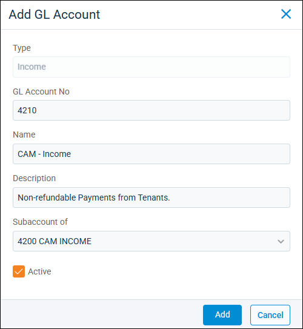
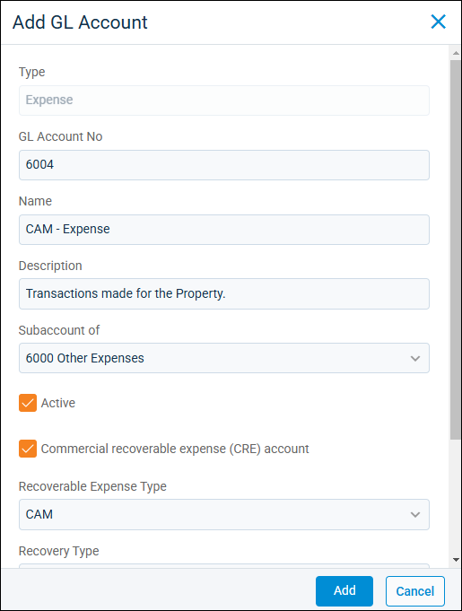
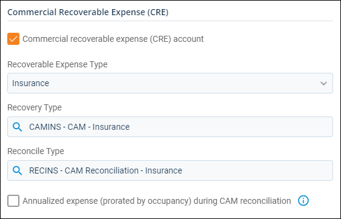

Source: https://rmxhelp.rentmanager.com/Topics/Express/KB/Charge-Type-Set-Up-CRE.htm
Set Up a CRE Charge Type
Commercial recoverable expense (CRE) charge types allow you to link the transactions for specific services or products with unique general ledger (GL) accounts. CRE charge types are used to collect income from your tenants based on their pro rata share of the property. At the end of the period when you reconcile, this income is compared against the linked expense where this charge type is listed as the recovery type, such as for common area maintenance.
The specific setup of your GL accounts and charge types depends on your business needs. This process describes the basics of setting up CRE charge types and linking them to GL accounts. Before creating a CRE charge type, you should have one CRE expense-type GL account and two income-type GL accounts: one for a recovery charge type and one for a reconciliation charge type. When you create the charge types, you select the income-type GL account. Then, after you create the CRE charge type, you must go back to your Chart of Accounts and add the charge types to the relevant expense-type CRE GL account. These CRE charge types display when completing reconciliations as well as on the completed reconciliation statement. Any charges set up during this process display on your tenant's statements. If you want to change how charge types display, individual income and charge types must be set up to fit your needs.
Warning
Please speak with your accountant about the financial implications to ensure this is the best course of action for your business.
Related Privileges
| Group | Privilege | Column |
|---|---|---|
| Accounting | Charge types | Add, View |
| General ledger accounts | View |
For more information, refer to Control User Access.
Step 1: Create CAM Income Account
To ensure that each charge type corresponds with the correct income-type related transactions made by tenants, you need to create the appropriate GL accounts to link them together. To create a new income-type GL Account, do the following:
-
Go to
 arrow_forward Accounting arrow_forward General arrow_forward Chart of Accounts.
arrow_forward Accounting arrow_forward General arrow_forward Chart of Accounts.
The GL Accounts page displays. -
Click
 Add GL Account.
Add GL Account.
-
In the Type drop-down, select Income.
-
In the GL Account No field, enter an account number to be used as a system-wide identifier for the new GL account. The next available account number automatically populates based on the Type you select.
-
In the Name field, enter a name to reflect the type of income this GL account holds.
-
Enter an option Description to record additional information about what the GL account is for.
-
If this account is a child account of a larger GL account, search for a GL account from the Subaccount of drop-down to act as the parent GL account for this new account.
-
When you are satisfied with the information you have entered, click Add.
The new income GL account is added to Rent Manager.
Step 2: Create CAM Expense Account
To record property related expenses that are linked to the appropriate charge types, you need to create expense-type GL accounts. To create a new expense-type GL account, do the following:
-
Go to
arrow_forward Accounting arrow_forward General arrow_forward Chart of Accounts.
The GL Accounts page displays. -
Click
Add GL Account.
-
In the Type drop-down, select Other Expense.
-
In the GL Account No field, enter an account number to be used as a system-wide identifier for the new GL account. The next available account number automatically populates based on the Type you select.
-
In the Name field, enter a name to reflect the type of income this GL account holds.
-
Enter an option Description to record additional information about what the GL account is for.
-
If this account is a child account of a larger GL account, search for a GL account from the Subaccount of drop-down to act as the parent GL account for this new account.
-
Select Commercial recoverable expenses (CRE) account.
-
In the Recoverable Expense Type drop-down, select the CRE charge type that categorizes whether the GL account totals display in the CAM, Tax, Insurance, or Other column of the Commercial Rent Roll report.
-
When you are satisfied with the information you have entered, click Add.
The new expense GL account is added to Rent Manager.
Step 3: Add CRE Charge Types
You can create as many charge types as you need to account for your business needs. Each charge type should correspond with the GL income-type accounts you created in the Step 1: Create CAM Income Account header. To add a CRE charge type, do the following:
-
Go to
arrow_forward Accounting arrow_forward General arrow_forward Charge Types.
The Charge Types page displays. -
Click
Add Charge Type.
The Add Charge Type pop-up displays. -
Enter the following information for the new charge type:
Field Description Name
Identifies this charge type (maximum of six characters) on reports and easily differentiates charge types.
Description
An additional note to provide context for this charge type, which displays on generated transactions ledgers for related accounts.
Chart Account The name of the income-type CRE GL account linked to this charge. Once a GL account is selected, transactions using this charge type affect the selected GL account's balance as charges are posted and paid.
Default Amount
If you typically charge the same amount for this charge type, enter a default amount.
This amount populates in the Amount field when adding a one-time charge or a recurring charge of this charge type.
This amount can be overridden when creating individual charges. It is not used for charges created from task automations or late fees.
Allocation Order
If you created custom allocation orders, select End or Beginning to determine the placement of the charge type on the allocation order. If you select End when creating a charge type, posted charges of this type are paid last. For charges types with Beginning selected, charges of this type are paid first when posted.
Active
This option is checked by default, allowing the charge type to be assigned to transactions for tracking the applicable financial data.
More Information
Uncheck this box to mark a charge as inactive. This is a good alternative to deleting a charge type, as the charge type cannot be used, but historical data concerning the charge remains intact.
For more information on deleting a charge type, refer to Delete a Charge Type.
Prorate By Day
Check to have this charge type automatically charge an altered amount based on the charge's post date. For example, if you prorate a tenant's rent who moves in mid-month, their rent charge would be lower than if they moved in at the beginning of the month, as they would pay only for the days they occupied the unit.
Commercial Recoverable Expense (CRE) Charge Type
Check to indicate that this charge type is used to recover the cost of commercial recoverable expenses and is used to calculate and perform a common area maintenance (CAM) reconciliation. For more information, refer to CAM Reconciliation.
-
Click Save.
The new charge type is added to the Charge Types page and is available to apply to transactions and link to expense-type CRE GL accounts.
Step 4: Set Up GL Account Recovery and Reconcile Types
After you set up your GL accounts and charge types, the last step in this process in Rent Manager is to establish recovery and reconcile expense type accounts. Each account type serves a different purpose. A recovery type is used when you want to compare income from the charge type against this expense. A reconcile type is used to record any difference that needs to be captured when completing reconciliations on the tenant's account.
To link the charge type to an expense-type CRE GL account, like the one created in the Step 2: Create CAM Expense Account header, do the following:
-
Go to
arrow_forward Accounting arrow_forward General arrow_forward Chart of Accounts and select the expense-type CRE GL account.
-
In the Recovery Type field, enter the name of the CRE charge type used to balance CRE income and expenses.
-
In the Reconcile Type field, enter the name of the CRE charge type used when the CRE charge type is applied to a tenant charge.
More Information
You can only link one CRE charge type as the Recovery Type and one as the Reconciliation Type on a GL account. If you have separate CAM expenses that also relate to the income, you need to separate out those GL expense accounts with CRE charge types as well. Alternatively, you can manually separate expenses during the CAM reconciliation.
-
If the expense is not limited by the tenant’s move in/move out date, check Annualized expense (prorated by occupancy) during CAM reconciliation . The calculation used to determine the expense is Annualized Expense = Total Expense x Division Method (pro rata) x Tenant’s Occupancy. This calculation is based off the number of days in the year so note that the calculation results vary during leap years.
-
When you are satisfied with the information you have selected, click Save.
The GL account is updated as either a Recovery Type or Reconcile type.
Step 5: Add CRE Recurring Charges
After setting up each of your CRE charge types so that they relate to your specific GL income and expense-type accounts, you can create the associated recurring charges. When creating the recurring charge, make sure to use the CRE charge type that you marked as the Recovery Type. To create a recurring CRE charge, refer to Add a CRE Recurring Charge.